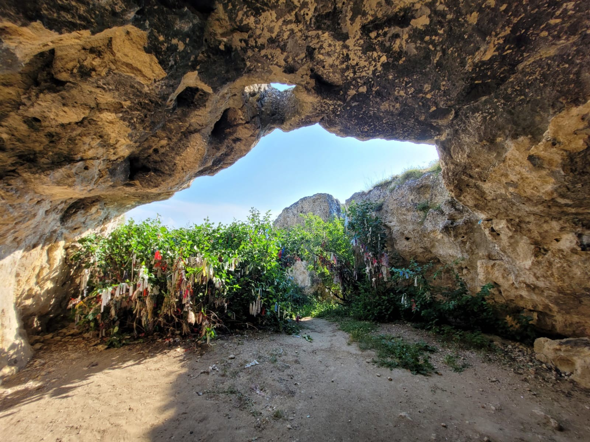
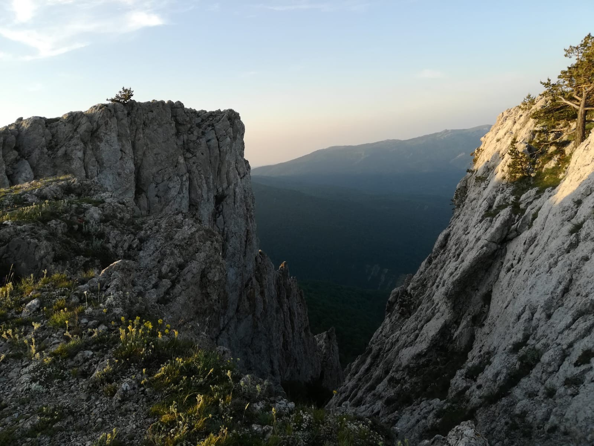
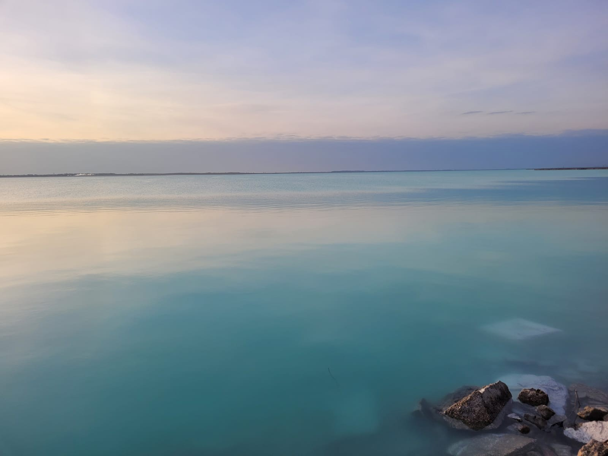
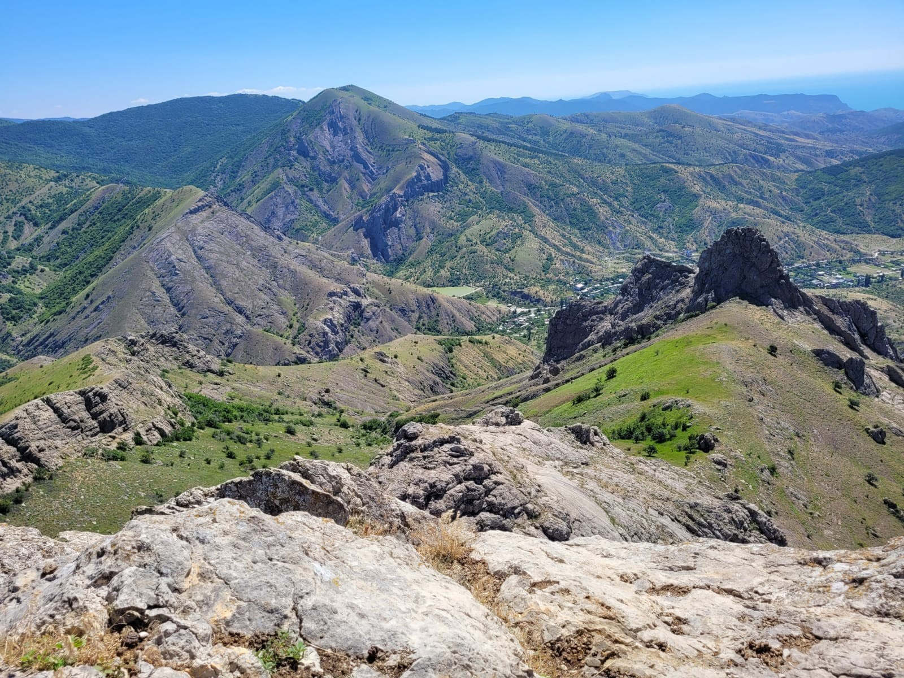

Пещера-святилище Кырк-Азиз
Пещера Кырк-Азис представляет собой грот в правом обрывистом борту р. Зуя,
максимальная высота которого достигает 3 метра, ширина и длина около 6 метров.
На стенах и в многочисленных естественных нишах грота видны обильные остатки от горевших тут свечей,
а потолок закопчен дымом от священного костра.
Сложность маршрута:


Гора Демерджи
Горный массив Демерджи по праву считается одним из самых живописных в Крыму.
Путешествуя по трассе, соединяющей Симферополь и Алушту, вблизи Ангарского
перевала можно увидеть гору, вершина которой напоминает крепость.
Гора Демерджи на солнце способна менять цвет, являясь горой-хамелеоном.
Сложность маршрута:

Красное озеро
Красное озеро в Красноперекопске — удивительный водоем на севере Крымского полуострова.
Дамбой озеро разделено на две части: южную с
красной водой и северную с бирюзовой. Красное озеро
одно из самых соленых озер полуострова. Длина озера составляет около 12км максимальная глубина 3м.
Сложность маршрута:

Судакская херня какая то
Судак курава падла - ещера Кырк-Азис представляет собой грот в правом обрывистом борту р. Зуя,
максимальная высота которого достигает 3 метра, ширина и длина около 6 метров.
На стенах и в многочисленных естественных нишах грота видны обильные остатки от горевших тут свечей,
а потолок закопчен дымом.
Сложность маршрута: